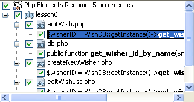
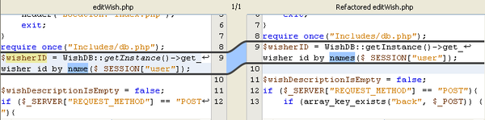

Rename Refactoring allows you to safely rename a PHP element across all files in an application.
For safety, rename refactoring requires you to preview and approve your changes.
Rename Refactoring involves two user interfaces:
Rename dialog. You opened this Help topic from the Help button in this dialog.
Refactoring window. After you complete the Rename dialog, you preview your changes
in the Refactoring window.
Rename dialog
New name: Type the new name in this field.
Preview. You must click Preview to rename the element. Clicking Preview opens
the Refactoring window.
Refactoring Window
The Refactoring window opens below the Editor window. The Refactoring window shows every place in your
application that could be affected by refactoring, and lets you exclude files or individual instances
from refactoring. The Refactoring window contains the following sections:
Navigation buttons. On the left side of the Refactoring window are a series of buttons for navigating through the
tree of instances. Hover your cursor over a button to see a tooltip describing its function.
Refresh
Collapse/expand all nodes in tree
Show logical view (organized by syntax)
Show physical view (organized by location)
Previous occurance
Next occurance
Tree of instances. A tree view of all instances of the element
that you want to rename. Using the navigation buttons you can view either a logical tree,
organized by syntax, or a physical view, organized by location. By default, all instances are ticked.
Untick an instance if you do not want to rename that instance. Select an instance to preview the
current/refactored form in the preview.

Preview. In the preview, compare the original and refactored versions of the code line
you selected in the tree of instances.

Do refactoring/Cancel. After you have previewed the refactoring and excluded any
instances that you do not want to rename, click Do refactoring. If you do not want to rename
any instances, click Cancel.